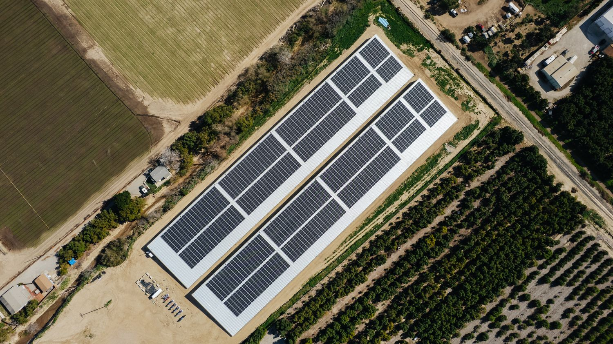

Featured project
A century-old grower cooperative is converting its water system from gravity-fed canals to pressurized distribution: precise delivery to every parcel, far less lost to evaporation and seepage. Pressure costs electricity, and electricity rates directly affect the ability of farming to pencil in Ventura County.
The solar system was built on top of two new reservoir covers. The energy generation pays for the pumping. No land acreage taken out of production, and millions in projected net savings passed straight through to the member growers.
Project gallery
Two covered reservoirs carrying the array that pumps them. Photographed February 2026.
Energy resiliency for water
Much of Ventura County's water comes from wells, and electricity runs the pumps. After the Thomas Fire took down lines across the county in December 2017 and cut power to water pumping facilities, we built a fleet of battery storage systems at water well sites so the pumps can keep running when the grid doesn't.
All developed and operated by us, the majority owned by us, and every one within a short drive of the office.
Under construction
Ground mount tracking system for an industrial poultry processor, a solar carport for an irrigation company, and other energy storage projects for a water company.
Past projects
Ventura Energy opened its doors in 2021, on the back of more than a decade spent designing and building solar, from single rooftops to projects covering thousands of acres. The energy storage work started in 2018, alongside the idea that has since come to be called the virtual power plant.